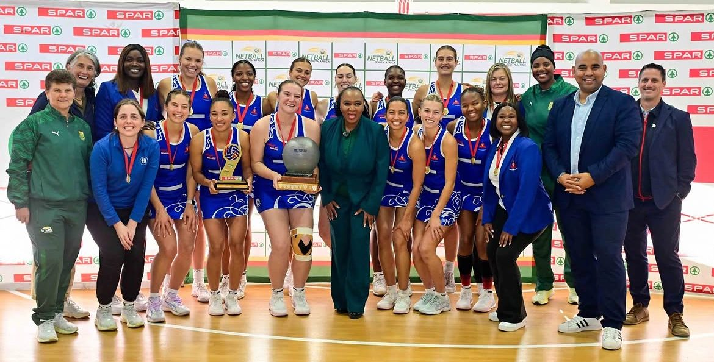
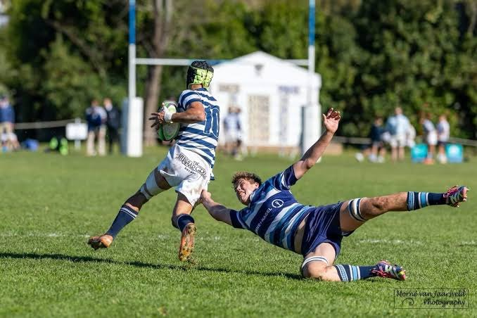
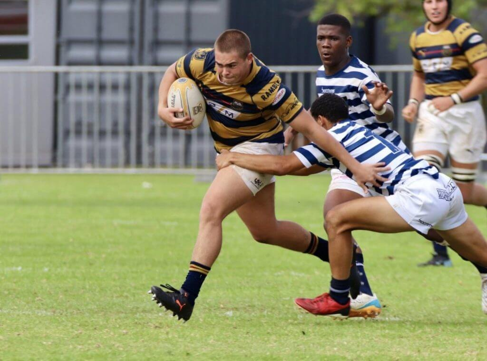
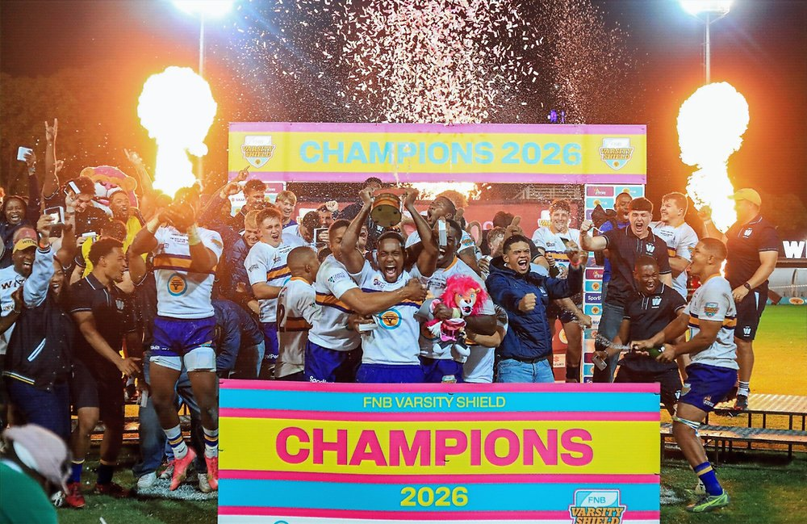
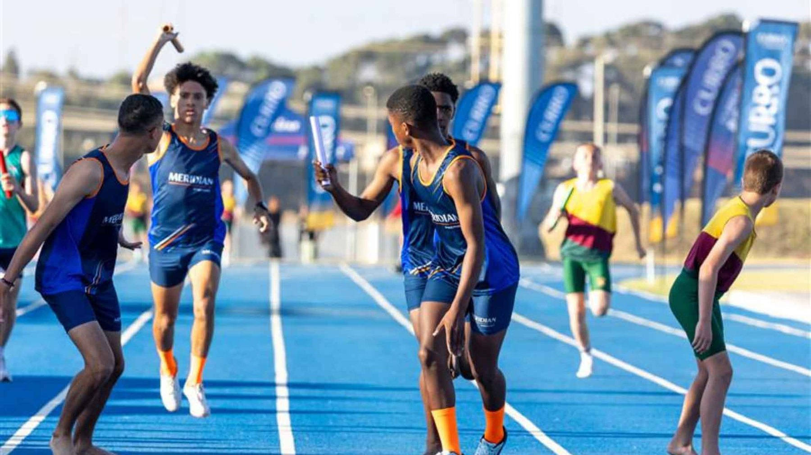
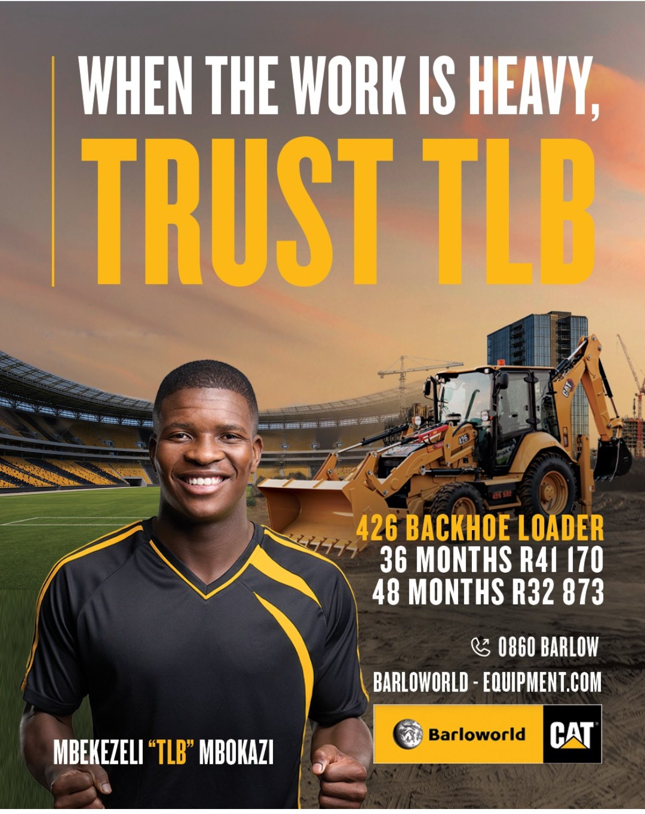
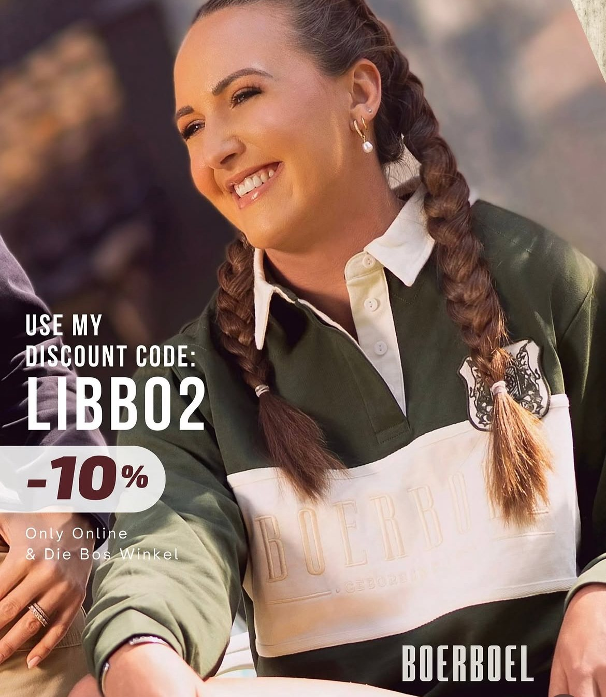
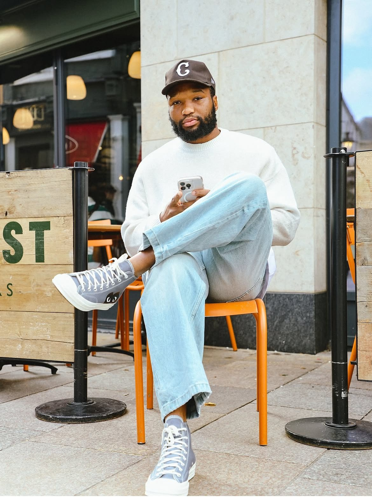
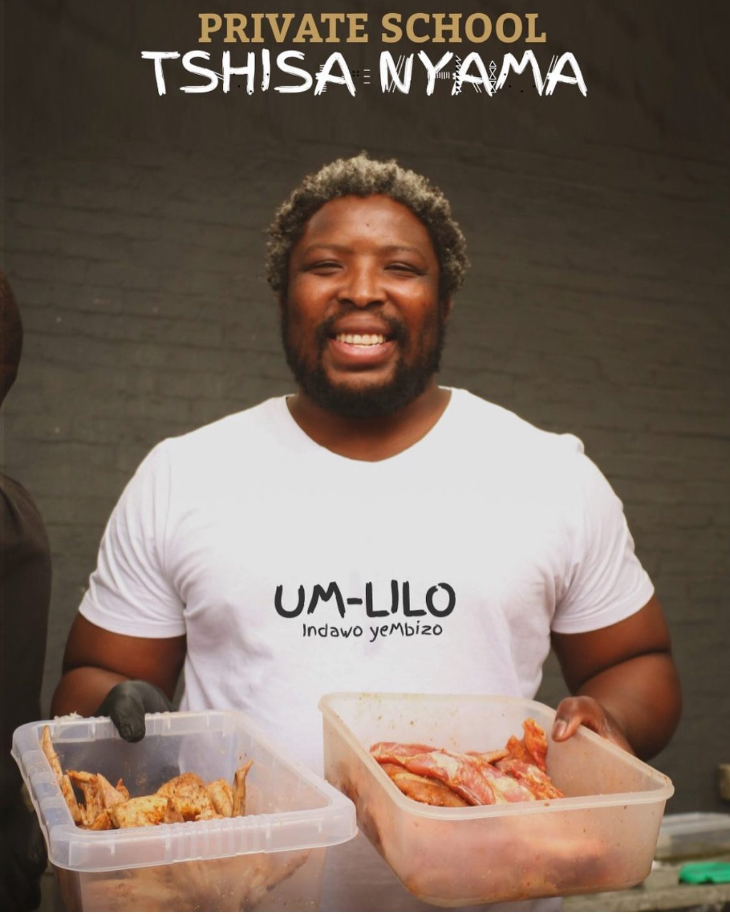

Know your worth.
The founding roster is open to the athletes the market under-measures most: school leavers, semi-professionals and retired professionals who own their own image rights.
School leavers
Matric and under-20 athletes before a professional body holds their image rights. INANI builds the dashboard from day one, so the first contract is negotiated from a number.
Sign up as a school leaverSemi-professionals
Players in the ABC Motsepe League, Telkom Netball League, club rugby and the athletics circuit, who are commercially active but have never been measured.
Sign up as a semi-proRetired professionals
Former internationals who have left their union or club structures and own their name outright. Often among the strongest regional brands in the country, and rarely priced.
Sign up as a retired proAthletes under contract to a professional union, league or club may be bound by collective image-rights agreements. INANI onboards contracted professionals only with written consent from the relevant body, and lists their public record only.

Insight · One to watch, 2027
Jake Dave, and the SACS side that grew up together.
Twenty-four of SACS's thirty-four points against Paul Roos came off the boot and the feet of a Grade 11 flyhalf: a try, two conversions and five penalties in a 38-34 loss that NovaNews called the performance of the weekend. Four weeks later he managed the game that beat Wynberg 44-29. Dave came up through Western Province's Grant Khomo u16A side with centre James Sale, and with Kwakanya Gobe they anchor a group that has played together since u13 and reaches matric in 2027. This is the roster INANI is built for: a number on the player before any professional body holds his image rights.
Sources: NovaNews, 27 Jul 2026 · SuperSport Schools, 26 Jul 2026 · SA Rugby magazine, 23 Aug 2026 · SuperSport Schools, 24 Feb 2026

Insight · Schools
A schoolboy's number is set by who he did it against
Four standouts were named for the weekend of 25 July. Twenty-four points in a four-point loss to Paul Roos sits above two tries and six conversions in a 28-point win over Rondebosch, because opposition strength and margin are the first two inputs in INANI's school model, before the raw score. Dave, Willemse, de Beer and Burden open 2027 with different starting values, and the gap is explainable.
Record: NovaNews, 27 Jul 2026

Insight · University
Promotion is a repricing event for every player in the squad
Wits go from the Shield to the Varsity Cup on an unbeaten season. Same players, a bigger broadcast window and a higher sponsorship tier from the first match of 2027. The value of a Wits shirt, a Wits player's social reach and the university's own inventory should be re-benchmarked before the season starts, not after a sponsor has already paid Shield prices for Cup exposure.
Record: Varsity Cup, 10 Apr 2026 · Varsity Sports

Insight · Athletics
The value of a school meeting is the records it creates
Nearly 2,000 athletes across two days on live television is a sponsorship property in its own right, but the longer value sits underneath it: every athlete on that track from age seven has a dated, timed, broadcast result. That is one of the earliest points in South African sport at which a valuation can start, and it is where INANI starts one.
Record: Curro, Feb 2026
Off the field
Athletes earn on the pitch and on the pavement. Every look here is traced to the deal, the label or the equity behind it, so the trend lands where the value is.

Sinazo Mcatshulwa and Aseza Hele
adidas, "Comfort speaks for itself", 14 March 2026. Two Springbok Women fronting a global apparel campaign; the first women's rugby adidas feature INANI has on the board.
Traced: adidas South Africa, Instagram
How the return is measured
Mbekezeli "TLB" Mbokazi
Barloworld Equipment × Cat, "When the work is heavy, trust TLB". A nickname becomes a product campaign: the defender Orlando Pirates sold to Chicago Fire this year fronts the 426 backhoe loader on finance from R32,873 a month. Launched 27 July 2026 with QT Sports.
Traced: @barloworldequipmentsouthafrica, @qt_sports
How the return is measured
Libbie Janse van Rensburg
Springbok Women flyhalf. Boerboel Wear, code LIBBO2 for 10% off online and at Die Bos Winkel. A discount code is revenue attribution in the open: every order carries her name. Also tags Nike, LRXtreme, OneSportSA and Hydrade on her own account.
Traced: Instagram, 10.5k followers
How INANI tracks a code
Lukhanyo Am
Springbok centre, and a founder. Swift Response, the emergency-response app he co-founded with André Esterhuizen and Vincent Koch, is equity, not a fee. adidas athlete; DanUp ambassador for Danone since May 2023.
Traced: swiftresponse.co.za · eGoli Jozi News
Swift Response
Scara Ntubeni
One-cap Springbok hooker, Western Province and Stormers since 2011. Now owns Um-Lilo, the flame-grill he runs in Woodstock and at the Old Biscuit Mill: the retired professional as business, not endorsement.
Sign up as a retired proSign up for the founding roster
Tell us who you are and where you play. INANI builds your public dashboard from the record, you connect your accounts, and your profile goes live on this page.
- Sign up with your sport, level and current club or school.
- INANI verifies eligibility and builds the dashboard.
- Connect your accounts. Your value goes live and briefs open to you.